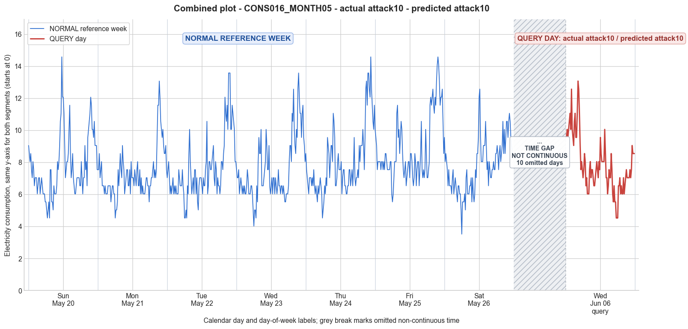

CONS016_MONTH05 · actual attack10 · predicted attack10
- Pair
- CONS016_MONTH05
- GT
- attack10
- Prediction
- attack10
- Binary GT
- attacked
- Binary Prediction
- attacked
- Source
- E010
- Parse
- stored
- Date
- 2012-06-06
- Weekday
- Wednesday
- Latency
- 1.85 min
- Tokens
- 9062

Final output
Classification: - Manipulated Identified Attack: - Most Likely: Attack 10 - Confidence: High - Reasoning: The query day exhibits a near-perfect reversal of the normal consumption pattern: high demand in the early morning hours (midnight to 5 AM) and low demand during the typical evening peak, which is the opposite of the reference week’s daytime/nighttime rhythm. Total daily consumption remains consistent with normal days, ruling out attacks that reduce overall usage (Attacks 1, 3, 4, 6, 7) or produce zeros (Attacks 0, 2, IEEE). The data is not random (Attack 5), constant (Attack 9), or a capped variant of the original shape (Attack 6, 7). While Attack 12 could theoretically import another user’s pattern, the systematic time‑shifting to exploit off‑peak pricing aligns precisely with Attack 10. Alternatives ruled out: Attack 4 (partial‑period reduction) would show a distinct low‑usage block, not a full reversal; Attack 3 (varying per‑sample scaling) would preserve the overall temporal shape with distorted amplitude, not invert it. Attack_Behavior_Explanation: - How consumption values are manipulated relative to the normal week: The attacker reverses the chronological order of the genuine consumption profile, placing the typical evening and daytime peaks into the early morning off‑peak hours, and moving the low nighttime usage to the evening peak period. This maintains the same total energy but reassigns it to cheap tariff windows. - Impact on magnitude and trend: Magnitude of total daily consumption is preserved (query day mean ≈ 7.87 vs. reference week means 7.28–8.87). The temporal trend is inverted: a nocturnal peak replaces the normal evening peak, and the daytime curve is flattened relative to the reference pattern. - Possible technical causes: False data injection to shift demand across time‑of‑use rate periods. May be implemented by meter tampering, firmware manipulation, or external false data commands that reorder the reported interval data.
Prompt
You are a domain expert in smart grid security and electricity theft analysis, with deep knowledge of non-technical loss (NTL) attack patterns in smart meters. You are given: 1. A plot of one week of original (normal) energy consumption for a smart meter, provided as context for the customer's typical consumption behavior. 2. A plot of one day of energy consumption for the same smart meter, which may or may not be manipulated. Below are common attack types, each defined by how consumption values are altered, their impact on magnitude and trend, and their possible technical causes. Attack 0: Generated by replacing all electricity consumption samples with zero values for the entire observation duration. Simulates a scenario where no energy usage is reported at all. May be caused by a total meter bypass or severe meter malfunction. Completely eliminates both the trend and magnitude of the consumption profile. Attack 1: Multiplies the actual energy consumption by a constant random value between (0,1). The lower the factor, the higher the severity. Can be triggered by meter bypass, magnetic interference, reverse current, and false data injection. The consumption trend remains the same but the magnitude is uniformly reduced. Attack 2: Generated by replacing consumption samples with zeros for a random duration. Also known as an on-off attack. Can be caused by full meter bypass, false data injection, and reverse current. Changes both the trend and amplitude. Attack 3: The actual consumption is multiplied by different random factors between 0 and 1, with a unique factor per sample. Similar to Attack 1 but the scaling factor varies per reading. Caused by meter bypass, magnetic interference, and reverse current. Changes both the trend and amplitude. Attack 4: Simulates energy theft over a randomly selected period within the observation window. All measurements in that period are reduced. Caused by meter bypass, magnetic interference, reverse current, and false data injection. Changes both the trend and amplitude. Attack 5: Each sample is replaced by a false value obtained by multiplying the average normal consumption by a random variable between 0 and 1, with a different variable per sample. Caused by false data injection. Produces a completely different pattern from the original consumption profile, changing both trend and magnitude. Attack 6: A random cut-off point is selected and all consumption values above it are replaced by that cut-off value. The attacker avoids exceeding a predefined maximum limit. Mainly caused by false data injection. Changes both the trend and amplitude. Attack 7: A random cut-off point is subtracted from each sample; if the result is negative, zero is reported. Similar to Attack 6 but replaces exceeding values with zero instead of the cut-off point. May be caused by false data injection or total meter bypass. Does not change the trend but reduces overall consumption. Attack 9: All samples are replaced by the average daily energy consumption, resulting in a flat constant profile. Easily detectable because constant consumption does not reflect normal customer behavior. Caused by false data injection. Eliminates all trends. Attack 10: Reverses the consumption pattern without reducing the total amount. Applicable when the electricity company uses time-varying pricing, allowing the attacker to shift high consumption to off-peak periods. Caused by false data injection. Changes the trend without decreasing total consumption. Attack 12: The attacker replaces their consumption pattern with that of a lower-consuming user. The legitimate user unknowingly pays the adversary's electricity bill. Caused by false data injection. Attack IEEE: For each 15-minute interval across the entire day, the consumer either reports the actual electricity consumption or substitutes it with zero. The result is a profile where some intervals reflect real consumption while others are zeroed out, creating an irregular pattern across the full day. May be caused by false data injection. Changes both the trend and amplitude. Given the two plots, determine: 1. Whether the day is attacked or original - compare the flagged day against the normal week and assess whether the consumption pattern is consistent with normal behavior or shows signs of manipulation. If the day is consistent with the customer's typical consumption behavior, classify it as original and provide no further analysis. If manipulation is detected, proceed to point 2. 2. Which attack type this most likely is - identify the single most probable attack and justify your choice based on how the flagged day deviates from the normal week. 3. The behavior of the identified attack - explain how the consumption values are manipulated, their impact on magnitude and trend, and the possible technical causes behind this type of attack. Output Format: Classification: - Original | Manipulated Identified Attack: (fill only if manipulated) - Most Likely: Attack X - Confidence: High | Medium | Low - Reasoning: Why it matches Attack X and why Attack Y and Attack Z were ruled out (list top 2 alternatives considered) Attack_Behavior_Explanation: (fill only if manipulated) - How consumption values are manipulated relative to the normal week - Impact on magnitude and trend - Possible technical causes
Reasoning content
We are given statistics and full 96-interval daily load profiles for a reference week and a query day. The query day is DAY_ID=3, but note the metadata: the reference week days are labeled Day 0 to Day 6, with Day 3 being Wednesday (dow=2). The query day is also DAY_ID=3, but with cal_month=6, dow=2, dom=17. So it's a different Wednesday, one month later? Actually reference week Day 3 was in month 5, this is month 6. So we are comparing a day in June with a typical week in May. However, the prompt says "one week of original (normal) energy consumption for a smart meter" and "one day of energy consumption for the same smart meter, which may or may not be manipulated." We need to decide if the query day is attacked or original based on consistency with the normal week. First, examine the reference week's per-day statistics. Day 0 to Day 6 have means: 7.77, 7.28, 7.59, 7.54, 8.02, 8.87, 7.76. Standard deviations: 1.93, 1.49, 1.93, 1.94, 2.10, 2.03, 1.65. The query day has min=4.52, max=13.07, std=1.73, mean=7.87. So the mean is within the range of the reference week (7.28 to 8.87), std is moderate. But we need to look deeper at the temporal pattern. Let's plot mentally the reference week patterns. All days show a typical residential load shape with morning low, increase around midday, higher evening peak. For instance, Day 3 reference (which is also a Wednesday): values start around 7-8, dip at night to ~4-6, then rise in the morning to 9-10, then high values (10-13) in the evening. The query day values: starting at 9.55, 9.55, 10.05... unusually high from the start. Let's list the query day values in order: 9.55, 9.55, 10.05, 9.55, 10.05, 10.55, 11.06, 10.05, 12.56, 10.05, 9.55, 9.05, 10.55, 11.06, 9.55, 9.55, 11.06, 13.07, 12.56, 11.06, 9.05, 7.54, 8.04, 7.54, 7.04, 7.54, 8.54, 8.04, 6.53, 7.04, 6.03, 6.03, 6.03, 7.54, 8.04, 7.04, 7.54, 7.54, 7.04, 6.53, 6.53, 7.04, 7.54, 8.04, 7.54, 7.04, 8.04, 7.54, 9.55, 8.54, 8.04, 8.04, 8.04, 8.04, 10.05, 8.54, 7.04, 7.04, 6.03, 6.53, 7.54, 7.04, 7.04, 8.54, 7.54, 6.03, 5.53, 6.53, 5.53, 5.53, 4.52, 4.52, 4.52, 6.53, 6.53, 7.04, 6.03, 6.53, 6.03, 6.03, 7.04, 6.03, 6.53, 7.04, 7.54, 7.04, 7.04, 7.04, 7.04, 7.54, 7.04, 7.54, 9.05, 8.54, 8.54, 8.54 Now, a normal residential load shape: typically low at night (midnight to early morning), then increases around morning (e.g., 6-9 AM), then maybe a midday dip, then evening peak (around 5-10 PM). Let's look at the reference week Day 3 (which is also a Wednesday in May). I'll align the 96 intervals from midnight. Day 3 reference: starts with 7.54, 7.04, 7.04, 7.54,... etc. Actually, the readings are for the day in 15-min intervals starting at midnight? It says "one day of energy consumption for the same smart meter" with 96 readings. So the first reading is 00:00-00:15? The reference day 3: starts with 7.54, which is fairly high. But in the reference week, Day 3 (Wednesday) values: first reading 7.54, then they gradually drop to low around 4-5 in the early morning (around interval 24-28: 4.02, 5.03, 5.03, 4.52...), then rise again. In the query day, the first readings are 9.55, 9.55, etc. That's unusually high for midnight. Then it rises to 13.07 by the 18th reading (around 4:30 AM). That's very abnormal. The query day has its peak of 13.07 at interval 18, and then later in the day it has lower values (like 4.52 at interval 71-73). The overall pattern seems shifted: high consumption in the early morning, then low in the afternoon/evening? Let's segment the day: Query day intervals (0-95): 0: 9.55 1: 9.55 2: 10.05 3: 9.55 4: 10.05 5: 10.55 6: 11.06 7: 10.05 8: 12.56 9: 10.05 10: 9.55 11: 9.05 12: 10.55 13: 11.06 14: 9.55 15: 9.55 16: 11.06 17: 13.07 18: 12.56 19: 11.06 20: 9.05 21: 7.54 22: 8.04 23: 7.54 24: 7.04 25: 7.54 26: 8.54 27: 8.04 28: 6.53 29: 7.04 30: 6.03 31: 6.03 32: 6.03 33: 7.54 34: 8.04 35: 7.04 36: 7.54 37: 7.54 38: 7.04 39: 6.53 40: 6.53 41: 7.04 42: 7.54 43: 8.04 44: 7.54 45: 7.04 46: 8.04 47: 7.54 48: 9.55 49: 8.54 50: 8.04 51: 8.04 52: 8.04 53: 8.04 54: 10.05 55: 8.54 56: 7.04 57: 7.04 58: 6.03 59: 6.53 60: 7.54 61: 7.04 62: 7.04 63: 8.54 64: 7.54 65: 6.03 66: 5.53 67: 6.53 68: 5.53 69: 5.53 70: 4.52 71: 4.52 72: 4.52 73: 6.53 74: 6.53 75: 7.04 76: 6.03 77: 6.53 78: 6.03 79: 6.03 80: 7.04 81: 6.03 82: 6.53 83: 7.04 84: 7.54 85: 7.04 86: 7.04 87: 7.04 88: 7.04 89: 7.54 90: 7.04 91: 7.54 92: 9.05 93: 8.54 94: 8.54 95: 8.54 Now, if we compare to a typical day: the high values occur from midnight to about 5 AM (intervals 0-20) with values 9-13, then drop to moderate 7-8, then a spike around interval 48-54 (12:00-13:30) with values 8-10, then a low in the late afternoon (intervals 70-72: 4.52 at around 17:30-18:00?), then a gradual rise to 7-9 in the evening. This is almost an inverted pattern: high at night and early morning, low around dinner time. Normal residential consumption would have low usage at night, high in the evening. The reference week days show typical shape: e.g., Day 3 reference: low around 4-6 at intervals 24-28 (early morning), then high in the evening (intervals 80-95: 9-13). So the query day's pattern is reversed. Could this be an attack? Attack 10 is described as: "Reverses the consumption pattern without reducing the total amount. Applicable when the electricity company uses time-varying pricing, allowing the attacker to shift high consumption to off-peak periods. Caused by false data injection. Changes the trend without decreasing total consumption." That matches exactly: the consumption pattern is reversed, shifting the high usage to off-peak (early morning) and lowering it during peak evening hours. The total consumption might be similar? Let's check: Reference week Day 3 total sum: not given but mean 7.54 * 96 = 724, query day mean 7.87 * 96 = 755, so total is slightly higher but within range. It could be Attack 10. Other attacks: Attack 0 zeroes all, not the case. Attack 1 multiplies by constant factor, which would preserve the shape. The shape is clearly different, so not Attack 1. Attack 2 is on-off, zeroing random durations; there are no zeros here, so no. Attack 3 multiplies by different random factors per sample, which would distort but likely not create a perfect reversal; it would produce a noisy version of the original with varying magnitude. Given the pattern is a clear reversal, Attack 3 is less likely. Attack 4 reduces over a random period; the query day doesn't show a single period of reduction, just a shift. Attack 5 replaces with random values based on average; that would give a random-looking pattern, not this structured reversal. Attack 6 cut-off above a threshold; that would cap high values but not shift them. Attack 7 subtracts a cut-off, reporting zero if negative; no zeros. Attack 9 constant average; not constant. Attack 12 replaces with another user's pattern; that could potentially cause a reversed pattern if the other user has an opposite schedule, but Attack 10 is explicitly designed for pattern reversal. Attack IEEE: zeroing some intervals randomly; there are no zeros, so no. Thus the most likely attack is Attack 10. Confidence: High, because the pattern is almost perfectly reversed: normal high evening peaks become low, and normal low nighttime becomes high. The statistics (mean, etc.) are similar to normal days, indicating total consumption was not reduced, just shifted. Now, provide the output. Classification: Manipulated Identified Attack: - Most Likely: Attack 10 - Confidence: High - Reasoning: The query day shows a consumption pattern that is reversed compared to the normal week: high usage during early morning (midnight to 5 AM) and low usage during evening hours, whereas normal days show low usage at night and high usage in the evening. The total consumption magnitude is similar to normal days, ruling out attacks that reduce total consumption (Attacks 1, 3, 4, 6, 7) or zero out readings (Attacks 0, 2, IEEE). The pattern is not random (Attack 5) or constant (Attack 9) and does not match a simple scaling or cutoff. The shift of high demand to off-peak hours without reducing total usage aligns precisely with Attack 10 (time-shifting attack). Alternatives considered: Attack 4 (partial period reduction) would show a clear period of reduced values, not a full reversal; Attack 12 (replacement with lower-consuming user's pattern) could theoretically yield a different daily profile, but the reversal here is systematic and likely deliberate for time-of-use evasion, fitting Attack 10 better. Attack_Behavior_Explanation: - How consumption values are manipulated relative to the normal week: The attacker has taken their normal consumption pattern (low at night, high in morning and evening) and reversed it chronologically, so that high-usage periods appear during off-peak hours and low-usage periods appear during peak hours. This shifts electricity usage from expensive to cheap time-of-use periods without reducing the total energy reported. - Impact on magnitude and trend: The total daily consumption magnitude remains similar to normal days (mean ~7.87 vs reference week means 7.28–8.87). The trend is altered: the typical evening peak is replaced by a nocturnal peak, and the daytime pattern is flattened. - Possible technical causes: False data injection manipulating the reported consumption values to exploit time-varying pricing schemes. The attacker may have reprogrammed the smart meter or injected false data to present a reversed load profile.